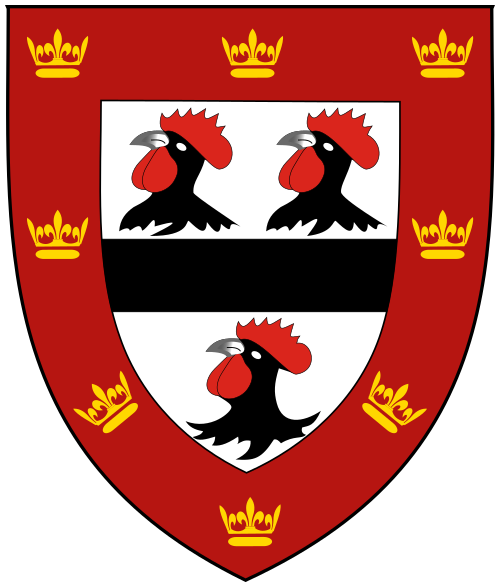

The history of the name
Alcock is a Middle English pet name that stuck: “little Al,” from a nickname for Alan or Alexander, plus the affectionate suffix -cok.
Origins
In medieval England, the suffix -cok (or -cock) was added to short forms of given names much the way we use “-y” today — a familiar, diminutive ending. The same pattern produced Wilcock (Will), Hancock (Hann, a form of John), Simcock (Sim, for Simon), and many others. Alcock is the version built on Al-, a short form of names such as Alan and Alexander. It began as something a neighbor might call you; by the 13th century it had hardened into a hereditary surname.
The earliest generally cited record is Alexander Alecoc in the Subsidy Rolls of Worcestershire, 1275, during the reign of Edward I — pleasingly, an Alexander, showing the name doing exactly what the etymology says it should.
Spellings and variants
Medieval scribes spelled by ear, so the name appears over the centuries as Alecoc, Alecok, Alkoc, Alcocke, Allcock, Awcock, and Aucock. The two main modern forms are Alcock and Allcock. Related but distinct names include Alcott (as in Louisa May) and Aycock, which took their own paths.
Where the name took root
The name is historically strongest in the English Midlands and the Northwest — Cheshire, Staffordshire, Derbyshire — with early records also in Worcestershire and Yorkshire. From the 1600s, branches established themselves in Ireland, notably in Waterford and Wexford. Alcocks crossed to colonial New England in the Great Migration of the 1630s — George Alcock of Roxbury, Massachusetts, arrived with the Winthrop fleet in 1630 and served as deacon and colonial representative — and the name later spread to Canada, Australia, and New Zealand, where it remains modestly but stubbornly present today.
Heraldry: the punning rooster

Image: Lupin & Richie, CC BY-SA 3.0
_shield.svg){kind=link}
Alcock arms are a classic example of canting heraldry — arms that pun on the bearer's name. Grants to Alcock families repeatedly feature cocks: as charges on the shield, as crests, or both. The most famous example is the rebus of Bishop John Alcock (c. 1430–1500): a cock standing on a globe (“all” + “cock”), which he worked into the stonework of his buildings and which survives in the arms of Jesus College, Cambridge — three cocks' heads on the shield to this day.
On living with the name
Every Alcock learns early that the name invites schoolyard wit. We take the long view: the name has outlasted seven centuries of jokes, and its bearers have responded by founding colleges, winning cup finals, and flying oceans. The rooster on our masthead is not embarrassment — it's a badge, five hundred years old, worn on purpose.
Sources & further reading
Etymology and early records summarized from standard surname references, including the Internet Surname Database, FamilySearch, Findmypast, and Geneanet. Corrections and family records are welcome — write in.